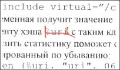
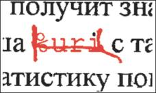
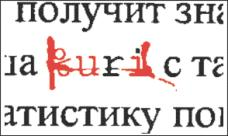
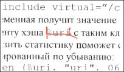
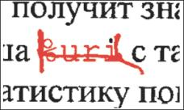
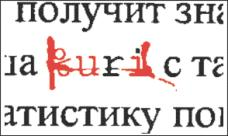
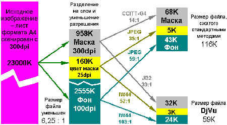

Оригинальное изображение.

Фрагмент файла, полученного в режиме преобразования clean (размер файла 5407 байт).

Режим преобразования scaned (4989 байт)

Режим photo (80 599 байт)

Прекрасно понимая разницу между словом рукописным и напечатанным, мы почти не публикуем в Сети первоисточников в их реальном формате. Мировые музеи и библиотеки уже оцифровали все сколько-нибудь ценные рукописи, однако размеры полученных файлов не позволяют ознакомиться с ними через Internet.
Сжатие полноцветной информации о документе формата А4 до размера средней Web-странички (46 Кбайт согласно данным на 1999 г.) теоретически вполне возможно. Учитывая растущую общественную потребность в доступе к «подлинникам», кажется удивительным, что стандарт на графику такого назначения формируется только сегодня.
Претенденты на роль законодателей нового формата уже появились. Успехи фирмы AT&T в этом направлении может оценить каждый. Формат DjVu – первый шаг к «цветному факсу» – ориентирован на передачу, просмотр в сети и распечатку преимущественно текстовых документов, для которых важное значение имеет не только содержание, но и форма: цвет и фактура пергамента, оторванный уголок и следы от складывания вчетверо, клякса после подписи и круглое пятно от винной бутылки рядом с печатью. Архивы всего мира накопили огромное число исторических бумаг с неповторимым колоритом такого рода.
Существующие компактные форматы JPG, GIF, факс-стандарт CCITT и JBIG обеспечивают достаточное сжатие, однако узко специализированны либо на фотографиях, либо на черно-белой графике и тексте. Поэтому смешанные изображения в их исполнении выглядят нечитаемыми. Хороший тому пример – JPG-скриншоты на сайтах софтверных фирм: либо текст не разберешь, либо грузятся по полчаса. Разработчики DjVu, должно быть, учли безуспешный опыт создания «универсального солдата», их детище представляет собой бригаду из трех форматов «в одном флаконе». В основу разделения «обязанностей» внутри DjVu положены простые наблюдения и факты.
В основе формата DJVU лежат несколько технологий разработанных в AT&T Labs.
Это:
Первые четыре алгоритма обеспечивают чрезвычайно высокую степень сжатия. Типичным является преобразование tiff файла размером 25МБ (формат А4 отсканированный на цветном сканере 300DPI) в DJVU файл размером 80КБ, без видимой на глаз потери качества. Для черно-белого изображения, размер DJVU файла может получиться еще меньше – примерно 30КБ. Возможно дальнейшее повышение коэффициента сжатия, вплоть до отношения 1000:1, правда потеря качества становится довольно заметной. Таким образом, на стандартную дискету 1.4МБ можно разместить 15-20 изображений высокого качества. Дополнительно заметим, что искажения, вносимые вейвлетным сжатием, существенно менее заметны по сравнению с искажениями в JPEG файлах.
Алгоритмы распаковки позволяют показать часть изображения, не разворачивая всю картинку в оперативной памяти, а также легко масштабировать изображение. Это позволяет быстро просмотреть файл даже на относительно слабой машине (например, 486 компьютер с 16МБ ОЗУ). Еще одной интересной особенностью алгоритмов распаковки является инкрементальное восстановление изображения. При просмотре через Интернет вначале выводится только текст, затем фон в низком разрешении и только потом фон в высоком разрешении. Это позволяет быстро оценить документ, не скачивая его полностью. И, наконец, отделение текста от фона чрезвычайно повышает его разборчивость, особенно, если текст напечатан на цветной бумаге или расположен поверх рисунка. Возможен и отдельный просмотр фона, причем алгоритм «маскировки» восстанавливает те части фона, которые были закрыты текстом. Изображения не содержащие текста могут быть преобразованы в формат IW44, который соответствует части формата DJVU ответственной за хранение фона.
Рассмотрим поподробнее работу каждого из алгоритмов.
Легкое размытее фоновой графики улучшает восприятие текста. Поэтому фон без потерь для общего впечатления сохраняется с разрешением 100 dpi в отдельный слой «background». Основная проблема – отделить текст от фона, особенно если это цветной текст, и более того, разноцветный. К счастью, цвет текста в большинстве документов практически одинаков в рамках одного знака. Это позволяет сохранять цветовую информацию о тексте с разрешением всего 25 dpi (слой «foreground») (см. табл.).
Параметры компонентов изображения в формате DjVu.
|
Имя слоя |
Пояснение |
Разрешение, dpi |
Глубина цвета, bits/pix |
|
Mask |
монохромная маска-трафарет |
300 |
1 |
|
Background |
цветной фон |
100 |
24 |
|
Foreground |
цвета маски |
25 |
24 |
Разделение изображения на текст и фон (формирование слоя-маски) основано на так называемой мультимасштабной кластеризации. Изображение разбивается на разноразмерные вложенные сетки, в каждой ячейке которых происходит распознавание текстовых и фоновых цветов по максимальным пикам на гистограмме. Отделив текст от фона в самой крупной сетке, алгоритм переходит к уточнению на основе данных из сеток меньшего размера. Разработчиками найдено эмпирическое соотношение: цвет, определенный как «текстовый» в наибольшей ячейке, смешивается с «текстовым» цветом в меньшей, вложенной ячейке в пропорции 20% к 80%. Результат смешения принимается за цвет текста для расчетов в еще более мелкой сетке по тому же принципу 20/80.
Очевидно, смешение одинаковых цветов даст тот же самый цвет. В этом случае вложенные ячейки игнорируются, и общий объем информации о слое-маске уменьшается на 10…30% по сравнению с разбиением одноразмерной сеткой наименьшего шага.
Мультимасштабная кластеризация не всегда дает ожидаемые результаты. При переводе некоторых документов в формат DjVu даже человеку порой непонятно, что является значимой информацией, а что – фоном. Программные конвертеры предоставляют возможность выбора параметров границы фон-текст. Как правило, это фильтры размера, цвета и инверсии. Фильтр размера позволяет отнести к фону слишком большие буквы (аршинный заголовок и т. п.). Действие двух других фильтров не столь очевидно – их функция в чем-то схожа с системами OCR (оптического распознавания текста).
Изображения, содержащие цветные текст и графику, не всегда легко поддаются преобразованию в DjVu. Однако, зная внутренне устройство формата, можно предпринять действия для того, чтобы сгладить недостатки.
Файл формата DjVu содержит от одного до трех слоев: foreground, слой-маски и background. Первые два слоя несут информацию об участках изображения, которые имеют четкие границы и примерно постоянный цвет внутри этих границ. Контуры участков сохраняются в слое-маске, которая обычно кодируется с разрешением 300 dpi. Цветовая информация находится в слое переднего плана (foreground), однако разрешение для этого слоя по умолчанию принято равным всего 25 dpi. Из-за этого мелкие детали, цвет которых изменяется резко, после преобразования могут оказаться окрашенными одинаково. Фоновый слой (background) по умолчанию кодируется с разрешением 100 dpi.
Результат зависит от выбранного варианта преобразования. Если требуется передать оригинал максимально точно, следует сохранить файл в режиме photo, при этом в DjVu-файле останется только один фоновый слой с повышенным разрешением 300 dpi. Одновременно с этим резко увеличивается размер файла.
|
Оригинальное изображение. |
 |
|
Фрагмент файла, полученного в режиме преобразования clean (размер файла 5407 байт). |
 |
|
Режим преобразования scaned (4989 байт) |
 |
|
Режим photo (80 599 байт) |
|
Результаты конвентирования в DjVu-формат с помощью программы-редактора DjVu Solo 3.01
Легко понять еще один принцип экономии битов в DjVu: если трафаретный текст занимает значительную площадь изображения, следует ли сначала вырисовывать фон в тех местах, которые позже будут все равно закрашены по трафарету?
В DjVu для сжатия фона, маски и цветовой информации о маске применяются различные алгоритмы. Фон сжимается вейвлет-алгоритмом IW44 (4х4 wavelets), слой-маска, не содержащая цветовой информации, упаковывается методом JB2, аналогичным применяемому в факсах. Цветовая информация о тексте так же кодируется IW44, но предварительно загрубляется до 25 dpi.
Формат IW44 очень близок к новому стандарту JPEG2000, но, по заверениям разработчиков, менее требователен к системным ресурсам при декомпрессии изображения во время просмотра. Попробуйте открыть в любом графическом редакторе какой-нибудь стандартный JPG размером 2500х3500 точек, и вы оцените важность этого преимущества.
Слой-маска перед упаковкой JB2 претерпевает оптимизацию с целью освобождения от «случайных» штрихов и «шума сканера» на основе так называемого Soft pattern matching algorithm. В результате каждый пиксель маски кодируется менее чем одним битом, но только в том случае, если алгоритм способен предсказать его цвет на основе 3…8 рядом лежащих точек с вероятностью более 50%. Это не так сложно.

У нового формата много применений: онлайновые книжные магазины, картографическая информация и даже е-хиромантия, где отправленная по почте фотография ладони обрабатывается подобным образом.
В Интернете всерьез заговорили о dejavu — явлении, при котором человеку кажется, что он где-то это уже видел. Объяснение названия просто: ее назначение — это сосканированные документы, к примеру, страницы из цветных журналов. Вы могли видеть статью на бумажном носителе, а чуть позже зайти в Интернет и увидеть ее электронный аналог. Причем, это будет не просто комбинация из текста и картинок на базе HTML, а самая настоящая графическая копия. Идея переноса документов из книг и журналов на просторы Сети не так уж нова. Но задумайтесь, сколько занимает отсканированный документ, сохраненный в формате TIFF (этот формат не искажает графические данные и передает их с достоверной точностью). В среднем файл с качеством порядка 300 dpi может занимать до 25–30 МВ. Я не стану спорить: такой файл можно поместить на свой сайт. Можно даже надеяться, что кто-то просидит всю ночь, чтобы посмотреть на первую страницу вашей книги, радостно узнав, в какой типографии она была отпечатана и когда сдана в печать. Если сканировать с меньшим качеством, т.е. примерно в 100 dpi, то теряется наглядность. Такой документ надо будет показывать только на старых компьютерах и при этом заявлять: «Видишь, какая плохая у тебя видеокарта!».
Так что TIFF отпадает, как носитель информации он неэкономичен. Поэтому самым распространенным форматом сохранения растровых данных в Интернете стал JPEG. Этот формат позволяет достаточно прогрессивно сжимать данные. Сравните: 25 МВ у TIFF и 600 КВ JPEG. Такой размер более или менее подходит для транспортировки по Сети в условиях хорошего и стабильного коннекта. Единственная проблема: удерживание приемлемого качества изображения — система компрессии данных приводит к потере информации, которую считает «лишней». Мы видим ужасные искажения, резкие цветовые переходы размыты, о первоначальном качестве можно забыть.
И JPEG отпадает как формат для сохранения документации в Сети. Многие пророчили большое будущее детищу Adobe под названием PDF. В настоящее время большинство компаний выкладывает документацию о своих продуктах именно в этом формате. Успеху способствует использование объектов ActiveX, позволяющих запускать Acrobat Reader прямо в окне Internet Explorer. К сожалению, PDF также излишне прожорлив: средний размер файла зачастую превышает 100 КВ.
Менее признанны, а значит, менее популярным является формат сжатия данных для факсимильных аппаратов. Он позволяет неплохо сжимать данные, хотя и с заметными потерями в качестве. Правда, от факсов никогда не требовалось идеального совпадения с оригиналом.
Исходя из вышеперечисленных факторов, компания AT&T решила создать нечто новое, способное произвести революцию на ниве публикации в Интернете. Так, был создан формат dejavu, сжимающий информацию в восемь раз эффективнее, чем JPEG. Качество же картинки почти не изменяется. Цветная страница из журнала, сосканированная при 300 dpi, имеет размер всего 20-79КВ. Черно-белое изображение может вообще опуститься до планки в 10КВ. Безусловно, на настоящий момент dejavu является самым совершенным компрессионным форматом. Браузеры, которые просматривает файл типа djvu (такое расширение имеет формат), декодирует данные на лету — ему не надо держать в памяти закомпрессованные и декодированные варианты изображения: уменьшаются системные ресурсы.
Сосканированный образ обрабатывается в специальном программном обеспечении, созданном АТ&Т и распространяемом бесплатно.
Мы познакомились с теорией, пора проверить все на практике.
Для того, чтобы воспользоваться преимуществами нового формата необходимо иметь две вещи: утилиту сжатия для издателя и утилиту просмотра для читателя. Кроме того, независимым разработчикам необходимы библиотеки и описание программного интерфейса для написания подобных утилит.
Как принято в последние годы, утилиты просмотра DJVU распространяются совершенно бесплатно. Для тех, кто использует Windows 95/98/NT, предлагается два продукта:
Для пользователей Linux/UNIX , предлагается плагин для Netscape Navigator, и утилита djvudecode из DJVU SDK (см. ниже). Плагин для Netscape Navigator, доступен для основных коммерческих UNIX платформ, Linux'а на Intell платформе, а также для FreeBSD в виде бета версии.
Под названием DJVU SDK AT&T бесплатно распространяет для некоммерческого использования утилиты компрессии/декомпрессии для платформ:
Инсталляционный файл имеет название вида djvu-N.N.N-platform.tar.gz, где N.N.N номер версии (1.1.5 или 2.0.1), а platform – название операционной системы для которой предназначен файл. Размер файла порядка 1 Mb. В состав дистрибутива входят программы конвертации из разнообразных графических форматов, таких как BMP, TIFF, PostScript, в DJVU и обратно, а также библиотеки и заголовочные файлы для разработки программных продуктов.
Для этих же платформ предлагается бета версия набора утилит djvuedit, позволяющая создавать файлы сложной структуры соответствующие формату DJVU 2.0.
К сожалению, тем кто работает в Windows придется раскошелиться. DJVU SDK распространяется только на коммерческой основе. Альтернативой покупке DJVU SDK является покупка лицензий на сжатие для упомянутого выше DjVuer'а фирмы Feith Systems and Software Inc.. Лицензии продаются на определенное число изображений.
Для инсталляции DJVU плагина для веб браузера необходимо скачать на http://djvu.att.com/ и запустить файл npdjvu.exe Программа инсталятор проводит поиск известных ей браузеров по всем дискам компьютера. Если у вас захламленный 4 Гб диск, то возможно придется подождать 15-20 минут, прежде чем процесс поиска завершится. После завершения поиска выдается список всех обнаруженных браузеров и предлагается выбрать к каким из них нужно доустановить DJVU плагин. Перед завершением инсталляции необходимо закрыть выбранные браузеры для гарантии корректной установки. По завершении установки можно сходить на http://djvu.att.com/ и посмотреть небольшую электронную библиотеку в формате DJVU.
Инсталляция программы DjVuer совершенно стандартна для Windows и не представляет никакой сложности.
Для инсталляции DJVU плагина для Netscape Navigator необходимо скачать и распаковать файл npdjvu-2.0.1-linux-libc6.tar.gz (если у вас старый дистрибутив Linux не включающий libc6/glibc2, то необходимо взять файл npdjvu-2.0.1-linux-libc5.tar.gz) и запутить файл install.sh
tar xzf npdjvu-2.0.1-linux-libc6.tar.gz
cd npdjvu-2.0.0.1999-05-20
./install.sh
Программа инсталляции сделает попытку определить местоположение и версию Netscape. Если автоматически это сделать не удастся, то будет предложенно ввести необходимую информацию вручную. Плагин может быть установлен в общий каталог Netscape (это может сделать только администратор системы) или в домашний каталог пользователя.
Для инсталляции DJVU SDK необходимо скачать и распаковать файл djvu-2.0.1-linux-libc6.tar.gz (или djvu-2.0.1-linux-libc5.tar.gz) и запутить файл install.sh
tar xzf djvu-2.0.1-linux-libc6.tar.gz
cd djvu-2.0.1
./install.sh
В начале инсталляции на экран будет выдано лицензионное соглашение и предложение его принять, а затем запрос на каталог в который надо установить программы. По умолчанию предлагается установка в /usr/bin. Можно установить программы в /usr/local/bin. Если у вас нет прав администратора, то можно установить программу в свой домашний каталог, например /home/myhome/bin.
В процессе инсталляции будут установлены файлы djvucmp, djvuencode, djvudecode динамические библиотки libdjvu.so и libdjvu++.so и man страницы. Кроме того в каталог в котором проводилась инсталляция будут распакованы исходные тексты утилит и дополнительная документация.
Стандартно DJVU SDK работает с файлами в форматах TIFF, PNM и BMP. Если вы собираетесь конвертировать файлы из других форматов, вам придется дополнительно установить пакет ImageMagic на http://www.wizards.dupont.com/cristy/ImageMagick.html.
Найти djvu-файлы нетрудно: легче всего вновь вернуться на центральный сайт технологии. После загрузки Djvu-сайта стартует плагин. Следуем взгляд вдоль панели. В самом начале находятся меню выбора типа вывода. К примеру, можно выводить текст только черно-белым или только фон. Следующее меню отвечает за размер документа на экране. Рядом примостились кнопки Zoom In, Zoom Out. После них идет панель контроллера, управляющего переключением между страницами и перемоткой взад и вперед (т.е. от корешка до корешка).
Первое впечатление от внешнего вида документа: качество не потрясает. Конечно, там нет лишних пикселей, нет рваных краев на буквах (что заметно при увеличении). Но все равно создается ощущение некоторой потертости картинки. Правда, читать можно без проблем, и это главное. Скроллинг осуществляется «ладошкой». При этом страница не мигает — двигаться по документу легко и удобно. Попробуем увеличить картинку, качество почти не страдает, особенно если дело касается текста. Графические изображения внутри документа могут быть довольно большими, но благодаря системам сжатия занимают относительно мало места. Правда, качество может заметно страдать. В целом впечатления самые хорошие, особенно, учитывая быстроту загрузки. Но, если задуматься, понимаешь: бесплатного сыра не бывает. Вы не можете сохранить текст из документа, возможна лишь одна операция — чтение. Функции же копирования в буфер обмена не существует. Безусловно, можно сохранить картинку, но это не является выходом из положения. Для чтения статьи в Word приходится запускать какую-нибудь программу для распознавания символов (OCR). Это отнимает время и не всегда приводит к хорошему результату: появляются ошибки и глюки в тексте. Такая информация расстраивает и заставляет относиться к формату более скептически.
Плагин управляется и настраивается через контекстное меню. Первые пункты отвечают исключительно за вывод изображения и за навигацию по документу. Save as сохраняет файл на диске(он имеет расширение djv или djvu). Print — печатает. Page Information выводит окошко с ключевыми параметрами файла: размер фона, маски, верхних слоев, а также текста, последнее значение таблицы указывает величину диапазона сжатия данных.
Основные опции программы настраиваются через пункт Preferences. Правда, параметров достаточно мало, среди них яркость картинки, горячая клавиша для вывода гиперссылок, размер буфера декодирования (полезен для слабых машин).